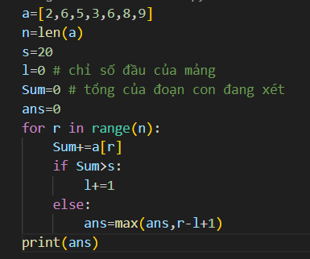
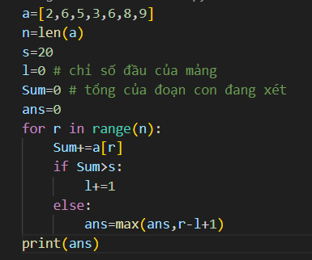
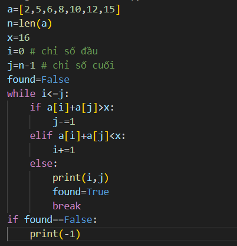
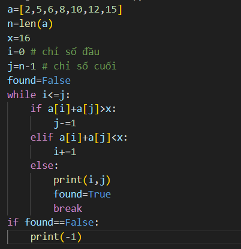
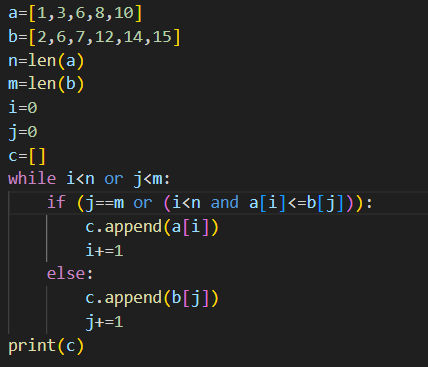
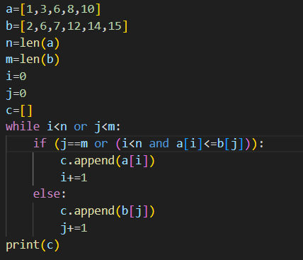

HAI CON TRỎ
Kỹ thuật hai con trỏ (two-pointer technique) là một phương pháp hiệu quả trong lập trình, đặc biệt hữu ích khi làm việc với các mảng và chuỗi. Kỹ thuật này giúp tối ưu hóa thời gian chạy cho nhiều bài toán liên quan đến tìm kiếm, sắp xếp và xử lý dãy số.
Kỹ thuật hai con trỏ thường sử dụng hai con trỏ hoặc chỉ số để duyệt qua mảng hoặc chuỗi theo một cách nào đó, với mục tiêu đạt được kết quả mong muốn một cách hiệu quả. Hai con trỏ này có thể di chuyển cùng chiều hoặc ngược chiều, tùy thuộc vào yêu cầu của bài toán.
Các loại kĩ thuật hai con trỏ
- Hai Con Trỏ Cùng Chiều: Trong trường hợp này, cả hai con trỏ đều bắt đầu từ một điểm và di chuyển theo cùng một hướng. Thông thường, con trỏ thứ nhất (left) bắt đầu từ vị trí đầu tiên, và con trỏ thứ hai (right) di chuyển từ trái sang phải để thực hiện các thao tác nhất định.
Ví dụ: Tìm đoạn con có tổng lớn nhất trong một mảng.
- Hai Con Trỏ Ngược Chiều: Trong trường hợp này, hai con trỏ bắt đầu từ hai đầu của mảng hoặc chuỗi và di chuyển về phía trung tâm. Kỹ thuật này thường được sử dụng để kiểm tra các điều kiện hoặc tìm kiếm các phần tử thoả mãn một tiêu chí nhất định.
Ví dụ: Tìm hai số trong một mảng đã được sắp xếp có tổng bằng một giá trị cho trước.
- Hai con trỏ duyệt trên hai mảng: Trong trường hợp này, mỗi con trỏ trỏ vào một mảng khác nhau, và di chuyển các con trỏ này theo một quy tắc nhất định để đạt được kết quả mong muốn.
Ví dụ: Trộn hai mảng
Ví dụ 1
Cho mảng a có n phần tử, tìm đoạn con dài nhất có tổng không quá s cho trước
Ví dụ ta có dãy a=[2,6,5,3,6,8,9]
Ta sẽ có hai con trỏ l,r cùng đặt ở vị trí 1. Hai con trỏ l,r lần lượt là chỉ số đầu và chỉ số cuối của đoạn con đang xét. Tổng của đoạn con này là sum(l,r) và độ dài của đoạn con là r-l+1.
Di chuyển lần lượt r từ 1..n
Nếu sum(l,r)<=s thì giữ nguyên con trỏ l, cập nhật đoạn ans=max(ans,r-l+1)
Nếu sum(l,r)>s thì tăng l lên
 

Ví dụ 2
Cho mảng a có n phần tử đã được sắp xếp, tìm hai số trong mảng có tổng bằng x cho trước
Ví dụ ta có dãy a=[2,5,6,8,10,12,15]
Ta sẽ có hai con trỏ i,j. Con trỏ i chạy từ đầu mảng, con trỏ j chạy từ cuối mảng
Nếu a[i]+a[j] > x thì ta giảm con trỏ j đi một, nếu a[i]+a[j] < x thì ta tăng i lên một đơn vị
Lặp lại cho đến khi a[i]+a[j]=x còn trong trường hợp không có thì lặp cho đến khi điều kiện i<=j bị sai
 

Ví dụ 3
Cho hai dãy số nguyên đã được sắp xếp không giảm a và b lần lượt có n và m phần tử. Hãy ghép chúng thành dãy c được bố trí theo thứ tự không giảm.
Ví dụ ta có dãy a=[1,3,6,8,10], b=[2,6,7,12,14,15]
Dựa vào những phân tích ta có giải pháp sử dụng hai con trở như sau:
Dãy a có con trỏ i, con trỏ này bắt đầu ở vị trí đầu dãy a
Con trỏ i này được thể hiện như phần tử nhỏ nhất chưa được chọn trong dãy a.
Dãy b có con trỏ j, con trỏ này bật đầu ở vị trí đầu dãy b
Con trỏ j này được thể hiện như phần tử nhỏ nhất chưa được chọn trong dãy b
Ta sẽ lập lại công việc này, cho đến khi đưa hết các phần tử trong dãy a và b vào đây c
Khi các phần tử trong một dây nào đó, dãy a hoặc dãy b, đều đã được đưa vào dãy c đưa lần lượt các phần tử trong dây còn lại vào dãy c
Ngược lại:
So sánh hai phần tử ở hai con trỏ.
Đưa phần tử có giá trị nhỏ hơn vào dây c, nếu hai phần tử có giá trị như nhau thì chọn một trong hai.
Tăng vị trí con trỏ ở phần tử được đưa vào lên một đơn vị.
 
